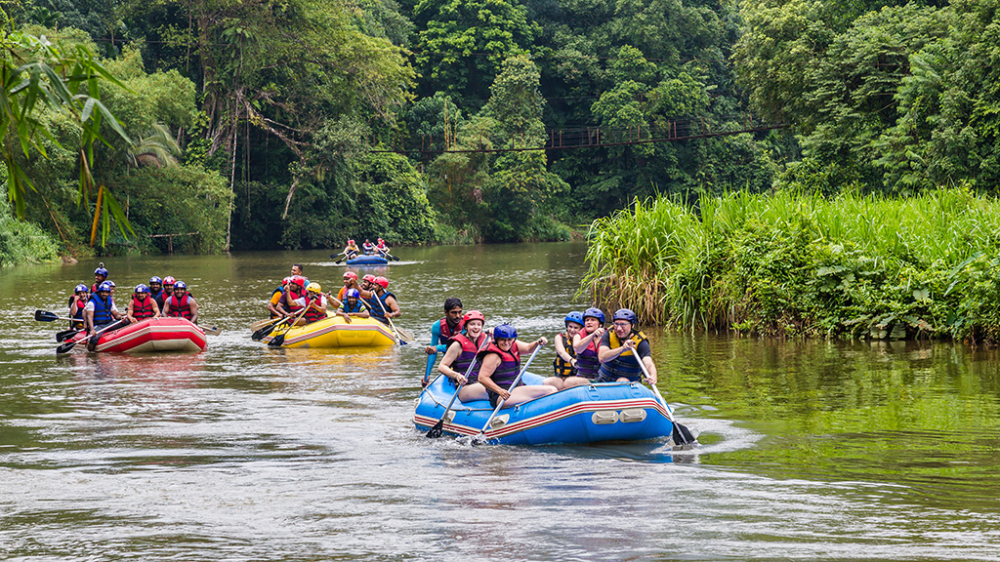
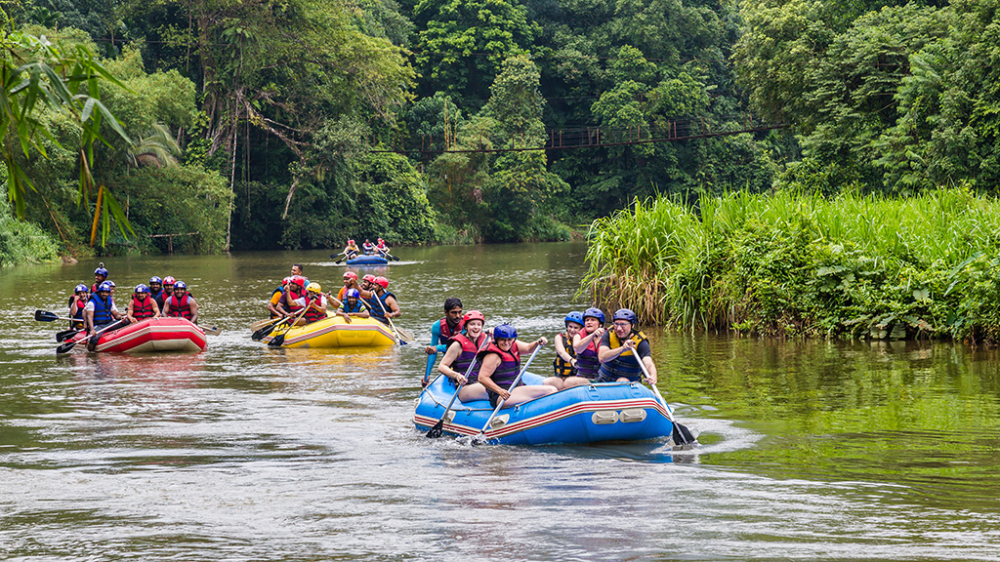

Overview
Purpose
help people find the best date to be able to live those unforgettable experiences in a family and individual way.
Audience
Residents from our region seeking travel options, whether for weekend getaways or extended vacations.
Families in search of memorable vacation experiences and travel packages suitable for all ages
Branding
Website Logo

Style Guide
Color Palette
Palette URL:
https://coolors.co/3a4194-e7c24f-a43312-34c0c5-aabd8c| Primary | Secondary | Accent 1 | Accent 2 |
|---|---|---|---|
| #3a4194 | #e7c24f | #a43312 | #34c0c5 |
Typography
Heading Font: Oswald
Paragraph Font: Lato
Normal paragraph example
The best Whitewater Rafting in Colorado, White Water Rafting Company offers rafting on the Colorado and Roaring Fork Rivers in Glenwood Springs. Since 1974, we have been family owned and operated, rafting the Shoshone section of Glenwood Canyon and beyond.
Colored paragraph example
Trips vary from mild and great for families, to trips exclusively for physically fit and experienced rafters. No matter what type of river adventures you are seeking, White Water Rafting Company can make it happen for you.
Navigation
Site Map
Navigation for page 2
Content
Home
Images for the Rivers

Rivers
Main Fork of the Salmon River, Idaho
deep in the Frank Church Wilderness of No Return winds the Salmon river. The Salmon was given the nickname long ago as the River of No Return by the people living near it because of the number of folks that came to visit and fell so in love with the rugged beauty of the river that they never left.
Herds of elk and deer graze on the hillsides around the river and bear and bighorn sheep are also commonly sighted. The river corridor is also lined with awe inspiring ponderosa pine which tower over the sandy beaches in the campsites and provide shelter from sun or rain when needed.
Let's not forget the rapids! They range from class I-IV. The Salmon is one of the longest undammed rivers in the United States. As a free flowing river the water is higher, faster, and colder in the early summer and lower, slower, and warmer in the late summer. There are good rapids all summer...but families with children who like to swim tend to appreciate the late summer's slower, warmer water more.
Desolation and Gray Canyon, Utah
Winding through canyons in central Utah, in some of the most desolate land anywhere, the Green river flows towards the mighty Colorado river and the sea. High grey stone cliffs, beautiful desert scenery, and great rapids have made this run famous. This 84-mile trip runs from from Sand Wash to Swaseys Rapid (just outside Green River Utah) and boasts outstanding scenery, interesting geologic formations, evidence of prehistoric and historic human activity, and great whitewater opportunities.
Desolation is rated a Class II/III and is usually done in 6 days
Desolation Canyon has been recognized as a National Landmark. This designation is based on the uniqueness and rich history that the canyon tells.
footer: Name of the stutend and images of soical media
Images for the Home


FAQ
This is a place to answer frequently asked client questions.
Is this a good trip for kids? What are the age ranges you allow?
Absolutely this is a good trip for children of all ages. We have found however that children over the age of 8 seem to enjoy it more overall (And parents especially enjoy it more if their children are all over 8). A common concern we get from parents is that their children will be bored stuck on a boat for hours at a time. Surprisingly we deal with very few bored children of any age. The areas we are rafting through are some of the most beautiful in the world, and you never know what you might see around any corner. Not to mention the rapids which keep things very interesting. Each boat also comes equipped with a guide. It has been proven that river guides are unable to go for very long at all without telling stories...some of which are even true!.
This is a place to answer frequently asked client questions.
Is whitewater rafting safe? I don't even know how to swim! Can I still come?
As with all adventure sports, there is an inherent and assumed element of risk. To help ensure your safety, our guides are all certified in Wilderness First aid and all start with at least 3 years of rafting experience. The most common injuries are sunburns and injuries that occur on land. Everyone on commercial rafting trips wears coast guard approved life vest or personal flotation device (PFD). Many non swimmers go on rafting trips and have a great time. Your guide will give you an in depth and engaging safety talk before your trip begins explaining what you should prepare for and do in the event that you fall out of the raft..
footer: Name of the student and images of soical media
Blog
Company blog to talk about recent goings on.
Next Summer booking open now!
Make sure to reserve your date now, we have limited runs on each river and they go fast. If you have only certain dates that you can get away you should book now.
Highlights from the past season
What an incredible season we have had. We celebrated our 50th year of running trips down the Grand Canyon. This year we ran 36 trips down the Grand Canyon introducing over 800 people to one of our favorite places on earth. We trained 4 new guides and welcomed them to our family. The season started off with some chilly weather in the early season, but our guests braved the cold and loved every minute of their trip (show pictures). Later the temperatures soared reaching highs of 120 F in the Grand canyon and 95 on the Salmon. We didn't have any trouble getting people in the water at those temperatures.
footer: Name of the stutend and images of soical media
Images for the Rivers
 

Wireframes
Home